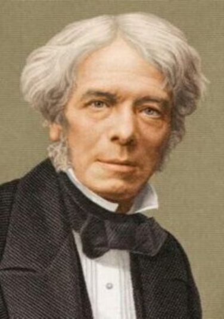

Майкл Фарадей
Майкл Фарадей (Michael Faraday) — английский физик и химик, чьи открытия в области электромагнетизма заложили основы для понимания законов сохранения энергии и электрического заряда. Его работы по электромагнитной индукции и электролиза стали ключевыми для развития современной физики и техники.
Краткая биография Майкла Фарадея
Майкл Фарадей родился 22 сентября 1791 года в Лондоне, в бедной семье кузнеца. Он получил лишь начальное образование и с 14 лет работал переплётчиком книг. Однако Фарадей увлекался наукой, читал книги по химии и физике и самостоятельно ставил эксперименты. В 1812 году Фарадей посетил лекции известного химика Гемфри Дэви, после чего отправил ему свои конспекты с просьбой о работе. Дэви взял Фарадея своим ассистентом в Королевский институт, где тот начал свою научную карьеру. Фарадей быстро проявил себя как талантливый экспериментатор. В 1820-х годах он изучал электромагнетизм, а в 1831 году открыл явление электромагнитной индукции, которое стало основой для создания электрических генераторов и трансформаторов. Он также сформулировал законы электролиза, известные как законы Фарадея, которые связывают количество вещества, выделяющегося на электродах, с количеством электричества. Фарадей ввёл понятие электромагнитного поля, которое позже развил Джеймс Клерк Максвелл в своей теории электромагнетизма. Хотя Фарадей не формулировал закон сохранения энергии в явном виде, его работы по преобразованию механической энергии в электрическую и наоборот стали важным шагом в понимании этого принципа. Майкл Фарадей умер 25 августа 1867 года в Хэмптон-Корте, Англия. Он отказался от рыцарского звания и других почестей, предпочитая скромную жизнь учёного. Его имя увековечено в единице измерения электрической ёмкости — фараде.